PIPAC Arm 3 comparative analysis
heinin
2025-03-19
Last updated: 2025-05-13
Checks: 5 2
Knit directory: PIPAC_spatial/
This reproducible R Markdown analysis was created with workflowr (version 1.7.1). The Checks tab describes the reproducibility checks that were applied when the results were created. The Past versions tab lists the development history.
The R Markdown file has unstaged changes. To know which version of
the R Markdown file created these results, you’ll want to first commit
it to the Git repo. If you’re still working on the analysis, you can
ignore this warning. When you’re finished, you can run
wflow_publish to commit the R Markdown file and build the
HTML.
Great job! The global environment was empty. Objects defined in the global environment can affect the analysis in your R Markdown file in unknown ways. For reproduciblity it’s best to always run the code in an empty environment.
The command set.seed(20240917) was run prior to running
the code in the R Markdown file. Setting a seed ensures that any results
that rely on randomness, e.g. subsampling or permutations, are
reproducible.
Great job! Recording the operating system, R version, and package versions is critical for reproducibility.
Nice! There were no cached chunks for this analysis, so you can be confident that you successfully produced the results during this run.
Using absolute paths to the files within your workflowr project makes it difficult for you and others to run your code on a different machine. Change the absolute path(s) below to the suggested relative path(s) to make your code more reproducible.
| absolute | relative |
|---|---|
| /home/hnatri/PIPAC_spatial/ | . |
| /home/hnatri/PIPAC_spatial/code/PIPAC_colors_themes.R | code/PIPAC_colors_themes.R |
| /home/hnatri/PIPAC_spatial/code/plot_functions.R | code/plot_functions.R |
Great! You are using Git for version control. Tracking code development and connecting the code version to the results is critical for reproducibility.
The results in this page were generated with repository version 3bbda19. See the Past versions tab to see a history of the changes made to the R Markdown and HTML files.
Note that you need to be careful to ensure that all relevant files for
the analysis have been committed to Git prior to generating the results
(you can use wflow_publish or
wflow_git_commit). workflowr only checks the R Markdown
file, but you know if there are other scripts or data files that it
depends on. Below is the status of the Git repository when the results
were generated:
Ignored files:
Ignored: .RData
Ignored: analysis/figure/
Ignored: celltype_markers.tsv
Ignored: immune_cluster_marker_annotations.tsv
Ignored: immune_cluster_marker_annotations_2ndpass.tsv
Ignored: main_cluster_marker_annotations.tsv
Ignored: nonimmune_cluster_marker_annotations.tsv
Ignored: nonimmune_cluster_marker_annotations_2ndpass.tsv
Unstaged changes:
Modified: analysis/arm3_comparative_analysis.Rmd
Modified: analysis/niche_construction.Rmd
Note that any generated files, e.g. HTML, png, CSS, etc., are not included in this status report because it is ok for generated content to have uncommitted changes.
These are the previous versions of the repository in which changes were
made to the R Markdown
(analysis/arm3_comparative_analysis.Rmd) and HTML
(docs/arm3_comparative_analysis.html) files. If you’ve
configured a remote Git repository (see ?wflow_git_remote),
click on the hyperlinks in the table below to view the files as they
were in that past version.
| File | Version | Author | Date | Message |
|---|---|---|---|---|
| Rmd | 3bbda19 | heinin | 2025-05-13 | Updated annotations, added feature expression by celltype |
| html | 3bbda19 | heinin | 2025-05-13 | Updated annotations, added feature expression by celltype |
Load packages
suppressPackageStartupMessages({
library(workflowr)
library(arrow)
library(Seurat)
library(SeuratObject)
library(SeuratDisk)
library(tidyverse)
library(tibble)
library(ggplot2)
library(ggpubr)
library(ggrepel)
library(googlesheets4)
library(workflowr)
library(patchwork)
library(ggpmisc)
library(scProportionTest)})Environment variables and helper functions
setwd("/home/hnatri/PIPAC_spatial/")
set.seed(9999)
options(scipen = 99999)
options(ggrepel.max.overlaps = Inf)
source("/home/hnatri/PIPAC_spatial/code/PIPAC_colors_themes.R")
source("/home/hnatri/PIPAC_spatial/code/plot_functions.R")Marker information
gs4_deauth()
metadata <- gs4_get("https://docs.google.com/spreadsheets/d/1sXXwOreLxjMSUoPt79c6jmaQpluWkaxA5P5HfDsed3I/edit?usp=sharing")
markers <- read_sheet(metadata, sheet = "Markers")
second_pass_nonimmune <- read_sheet(metadata, sheet = "Tumor 2nd pass")
second_pass_immune <- read_sheet(metadata, sheet = "Immune 2nd pass")
# Cell type markers by group
gs4_deauth()
markers_by_group <- gs4_get("https://docs.google.com/spreadsheets/d/1w0wrL-5KwNEWi_VpmriN7YmfwpBPlEYX0MKlwI2ZQu8/edit?usp=sharing")
markers_by_group <- read_sheet(markers_by_group, sheet = "Markers by group")Import and subset data
seurat_data <- readRDS("/tgen_labs/banovich/PIPAC/Seurat/PIPAC_NC50_NN20_PC20_Seurat_annotated_metadata_niches.rds")
DefaultAssay(seurat_data) <- "RNA"
seurat_data <- seurat_data %>%
NormalizeData() %>%
ScaleData()
seurat_arm3 <- subset(seurat_data, subset = Arm == "Arm3")
seurat_arm3 <- seurat_arm3 %>%
NormalizeData() %>%
ScaleData()
length(unique(seurat_arm3$Patient_ID))[1] 7length(unique(seurat_arm3$Sample))[1] 28unique(seurat_arm3$Timepoint)[1] "6" "0"All tumors
Cell type proportions by sample and sample type
create_barplot(seurat_arm3,
group_var = "Sample",
plot_var = "Annotation",
plot_levels = sort((unique(seurat_arm3$Annotation))),
group_levels = sort(unique(seurat_arm3$Sample)),
plot_colors = pipac_celltype_col,
var_names = c("Frequency (%)", ""),
legend_title = "Celltype")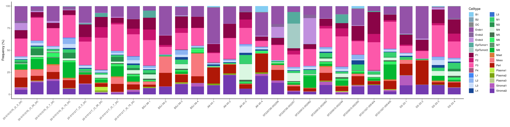
| Version | Author | Date |
|---|---|---|
| 3bbda19 | heinin | 2025-05-13 |
Cell type proportions by timepoint in tumors
create_barplot(subset(seurat_arm3, subset = Tissue == "Tumor"),
group_var = "Timepoint",
plot_var = "Annotation",
plot_levels = sort((unique(seurat_arm3$Annotation))),
group_levels = sort(unique(seurat_arm3$Timepoint)),
plot_colors = pipac_celltype_col,
var_names = c("Frequency (%)", ""),
legend_title = "Celltype")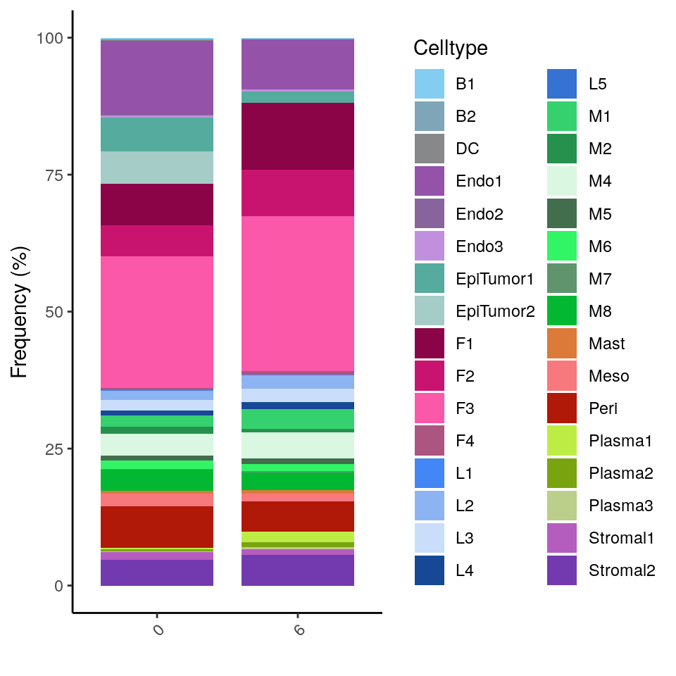
| Version | Author | Date |
|---|---|---|
| 3bbda19 | heinin | 2025-05-13 |
Cell type proportions by timepoint in tumor-adjacent samples
create_barplot(subset(seurat_arm3, subset = Tissue == "Normal"),
group_var = "Timepoint",
plot_var = "Annotation",
plot_levels = sort((unique(seurat_arm3$Annotation))),
group_levels = sort(unique(seurat_arm3$Timepoint)),
plot_colors = pipac_celltype_col,
var_names = c("Frequency (%)", ""),
legend_title = "Celltype")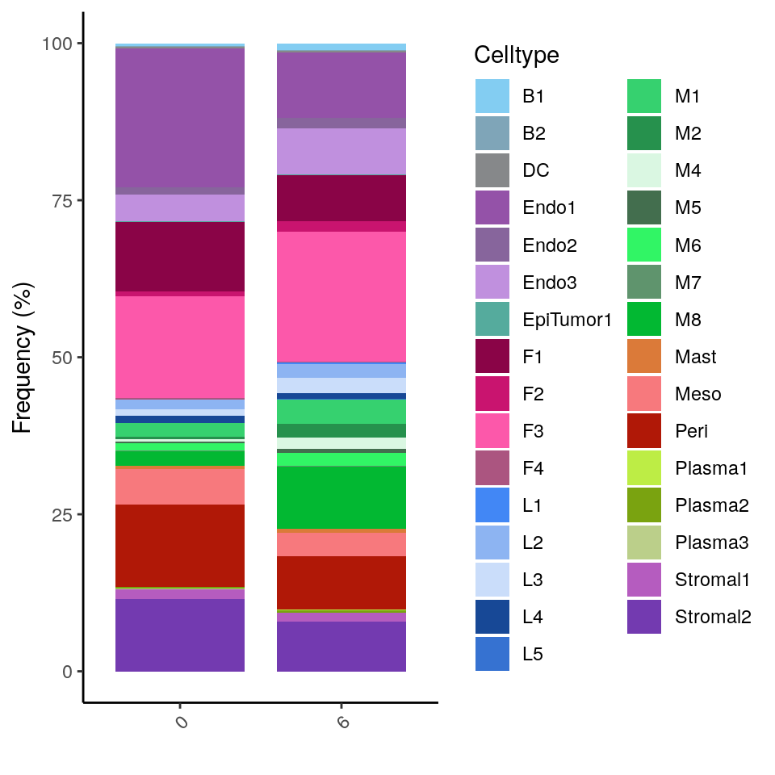
| Version | Author | Date |
|---|---|---|
| 3bbda19 | heinin | 2025-05-13 |
Cell numbers in tumor and normal
ct_table <- as.data.frame(table(seurat_arm3$Annotation, seurat_arm3$Tissue))
colnames(ct_table) <- c("Celltype", "Tissue", "Freq")
ct_table <- spread(ct_table, Celltype, Freq)
# Converting to percetange
#ct_table[,2:length(ct_table)] <- (ct_table[,2:length(ct_table)]/rowSums(ct_table[,2:length(ct_table)]))*100
ct_table <- gather(ct_table, Celltype, Freq, names(ct_table)[2:length(names(ct_table))], factor_key=TRUE)
ct_table$Tissue <- factor(ct_table$Tissue, levels = c("Normal", "Tumor"))
ggplot(ct_table, aes(x = Tissue, y = Freq, fill = Celltype)) +
geom_bar(stat="identity", position='stack', width = 0.8) +
scale_fill_manual(name = "Celltype", values = pipac_celltype_col) +
xlab("") +
ylab("Cell count") +
theme_classic() +
theme(axis.text.x = element_text(angle = 45, vjust = 1, hjust=1))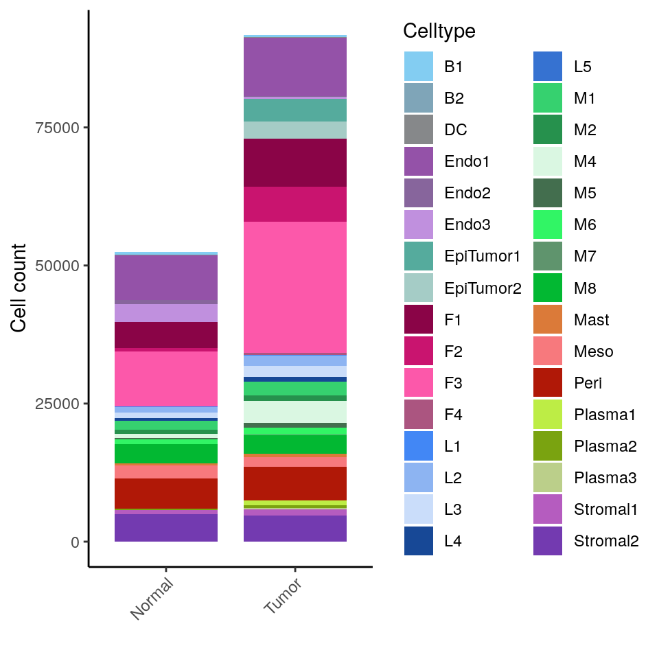
| Version | Author | Date |
|---|---|---|
| 3bbda19 | heinin | 2025-05-13 |
Tumor cell type proportions by response
arm3_tumor <- subset(seurat_arm3, subset = Tissue == "Tumor")
arm3_tumor <- arm3_tumor %>%
NormalizeData() %>%
ScaleData()
table(arm3_tumor$Patient_ID)
COH-022 COH-038 COH-045 MFL-040 MFL-043 MFL-046 MFL-049
3129 11811 7838 16227 15649 22360 14658 table(as.character(arm3_tumor$Sample))
20-010121T_(2_5_24) 20-010121T_(3_26_24) 20-010121T_(5_7_24)
6203 16157 9158
20-010121T_(6_19_24) BSJ-38-1 BSJ-38-3
5500 6315 5496
JM-45-1 JM-45-3 SF230726-002257
5191 2647 11105
SF230912-002063 SF230915-002249 SF231027-005404
5122 12437 3212
SS-22-1 SS-22-3
2328 801 arm3_tumor@meta.data %>%
dplyr::select(c("Patient_ID", "Sample")) %>%
distinct() Patient_ID Sample
BSJ-38-3_TMA8_aaaalbkj-1_9 COH-038 BSJ-38-3
SS-22-1_TMA8_aaagdmde-1_9 COH-022 SS-22-1
20-010121T_(2_5_24)_TMA8_aacmgcaa-1_9 MFL-046 20-010121T_(2_5_24)
20-010121T_(6_19_24)_TMA8_aacodpjo-1_9 MFL-049 20-010121T_(6_19_24)
SF230726-002257_TMA8_abompjkc-1_9 MFL-040 SF230726-002257
SF231027-005404_TMA8_admleojl-1_9 MFL-043 SF231027-005404
JM-45-1_TMA9_aaabjfbe-1_10 COH-045 JM-45-1
SS-22-3_TMA9_aagjmgfm-1_10 COH-022 SS-22-3
BSJ-38-1_TMA9_aameglle-1_10 COH-038 BSJ-38-1
JM-45-3_TMA9_abehepnb-1_10 COH-045 JM-45-3
20-010121T_(5_7_24)_TMA9_ablkgbhj-1_10 MFL-049 20-010121T_(5_7_24)
SF230915-002249_TMA9_accaokgb-1_10 MFL-043 SF230915-002249
SF230912-002063_TMA9_aecjangm-1_10 MFL-040 SF230912-002063
20-010121T_(3_26_24)_TMA9_aelaglgk-1_10 MFL-046 20-010121T_(3_26_24)table(arm3_tumor$BestResponse)
PR SD
15649 37436 create_barplot(arm3_tumor,
group_var = "BestResponse",
plot_var = "Annotation",
plot_levels = sort((unique(arm3_tumor$Annotation))),
group_levels = sort(unique(arm3_tumor$BestResponse)),
plot_colors = pipac_celltype_col,
var_names = c("Frequency (%)", ""),
legend_title = "Celltype")
| Version | Author | Date |
|---|---|---|
| 3bbda19 | heinin | 2025-05-13 |
Testing for significance with scProportionTest
prop_test <- sc_utils(arm3_tumor)
prop_test <- permutation_test(
prop_test, cluster_identity = "Annotation",
sample_1 = "PR", sample_2 = "SD",
sample_identity = "BestResponse")
permutation_plot(prop_test) +
ggtitle("All tumors")
| Version | Author | Date |
|---|---|---|
| 3bbda19 | heinin | 2025-05-13 |
Tumor-adjacent cell type proportions by response
arm3_normal <- subset(seurat_arm3, subset = Tissue == "Normal")
arm3_normal <- arm3_normal %>%
NormalizeData() %>%
ScaleData()
table(arm3_normal$Patient_ID)
COH-022 COH-038 COH-045 MFL-040 MFL-043 MFL-046 MFL-049
6599 5515 6967 11290 8315 6499 7248 table(as.character(arm3_normal$Sample))
20-010121N_(2_5_24) 20-010121N_(3_26_24) 20-010121N_(5_7_24)
3859 2640 2463
20-010121N_(6_19_24) BSJ-38-2 BSJ-38-4
4785 2395 3120
JM-45-2 JM-45-4 SF230726-002256
2877 4090 4156
SF230912-002062 SF230915-002250 SF231027-005405
7134 3655 4660
SS-22-2 SS-22-4
2878 3721 arm3_normal@meta.data %>%
dplyr::select(c("Patient_ID", "Sample")) %>%
distinct() Patient_ID Sample
20-010121N_(3_26_24)_TMA8_aaacehok-1_9 MFL-046 20-010121N_(3_26_24)
SF230912-002062_TMA8_aagpdaej-1_9 MFL-040 SF230912-002062
SF230915-002250_TMA8_aapkmjjf-1_9 MFL-043 SF230915-002250
BSJ-38-2_TMA8_abgdjnnp-1_9 COH-038 BSJ-38-2
JM-45-4_TMA8_aedpaehf-1_9 COH-045 JM-45-4
20-010121N_(5_7_24)_TMA8_aeecfihf-1_9 MFL-049 20-010121N_(5_7_24)
SS-22-4_TMA8_aeeklhem-1_9 COH-022 SS-22-4
BSJ-38-4_TMA9_aaagjppb-1_10 COH-038 BSJ-38-4
JM-45-2_TMA9_aamalbcp-1_10 COH-045 JM-45-2
SS-22-2_TMA9_abfhegoa-1_10 COH-022 SS-22-2
20-010121N_(6_19_24)_TMA9_abobgfmj-1_10 MFL-049 20-010121N_(6_19_24)
SF231027-005405_TMA9_abokfaoo-1_10 MFL-043 SF231027-005405
20-010121N_(2_5_24)_TMA9_acinkijl-1_10 MFL-046 20-010121N_(2_5_24)
SF230726-002256_TMA9_afbnfahn-1_10 MFL-040 SF230726-002256table(arm3_normal$BestResponse)
PR SD
8315 26329 create_barplot(arm3_normal,
group_var = "BestResponse",
plot_var = "Annotation",
plot_levels = sort((unique(arm3_tumor$Annotation))),
group_levels = sort(unique(arm3_tumor$BestResponse)),
plot_colors = pipac_celltype_col,
var_names = c("Frequency (%)", ""),
legend_title = "Celltype")
| Version | Author | Date |
|---|---|---|
| 3bbda19 | heinin | 2025-05-13 |
Testing for significance with scProportionTest
prop_test <- sc_utils(arm3_normal)
prop_test <- permutation_test(
prop_test, cluster_identity = "Annotation",
sample_1 = "PR", sample_2 = "SD",
sample_identity = "BestResponse")
permutation_plot(prop_test) +
ggtitle("All tumors")
| Version | Author | Date |
|---|---|---|
| 3bbda19 | heinin | 2025-05-13 |
Cell type proportion correlations with survival time
Linear regression
metadata <- seurat_arm3@meta.data %>%
dplyr::select("Patient_ID", "DISEASESITE", "osmonths", "pfsmonths", "No_of_PIPACs") %>%
distinct()
prop_table <- as.data.frame(table(seurat_arm3@meta.data$Annotation, as.character(seurat_arm3@meta.data$Patient_ID)))
colnames(prop_table) <- c("Annotation", "Patient_ID", "Freq")
prop_table <- spread(prop_table, Annotation, Freq)
# Converting to percentage
prop_table[,2:length(prop_table)] <- (prop_table[,2:length(prop_table)]/rowSums(prop_table[,2:length(prop_table)]))*100
prop_table <- gather(prop_table, Annotation, Freq, names(prop_table)[2:length(names(prop_table))], factor_key=TRUE)
# Adding survival data
prop_survival <- merge(prop_table, metadata, by = "Patient_ID")
prop_survival$osmonths <- unlist(prop_survival$osmonths)
prop_survival$pfmonths <- unlist(prop_survival$pfmonths)
# Plotting
plot_list <- lapply(sort(unique(seurat_arm3$Annotation)), function(ct){
prop_survival %>%
filter(Annotation == ct) %>%
ggplot(aes(x = Freq, y = osmonths, color = Annotation)) +
geom_point() +
scale_color_manual(name = "Annotation", values = pipac_celltype_col) +
stat_poly_line() +
stat_poly_eq(formula = y ~ x,
rr.digits = 3, p.digits = 3, small.p = T,
aes(label = paste(after_stat(rr.label), after_stat(p.value.label), sep = "*`,`~")),
label.x = 0.01, label.y = 1, parse = T) +
ylab("Overall Survival") +
xlab(paste0("% of ", ct, " cells")) +
theme_classic() +
theme(axis.text.x = element_text(color = "black"),
axis.text.y = element_text(color = "black")) +
NoLegend()
})
wrap_plots(plot_list, ncol = 3)
names(plot_list) <- sort(unique(seurat_arm3$Annotation))Fibroblast marker expression
DotPlot(subset(seurat_arm3, subset = Annotation %in% paste0("F", seq(1,5))),
group.by = "Annotation",
features = unique(markers_by_group[which(markers_by_group$annotation1 == "CAFs"),]$feature),
cols = c("azure", "tomato3")) +
coord_flip() +
ggtitle("CAFs, all timepoints")Baseline tumors
Cell type proportions by sample
unique(seurat_arm3$Timepoint)[1] "6" "0"baseline_tumor <- subset(seurat_arm3, subset = Tissue == "Tumor" &
Timepoint == 0)
baseline_tumor <- baseline_tumor %>%
NormalizeData() %>%
ScaleData()
table(baseline_tumor$Patient_ID)
COH-022 COH-038 COH-045 MFL-040 MFL-043 MFL-046 MFL-049
2328 6315 5191 11105 12437 6203 9158 table(as.character(baseline_tumor$Sample))
20-010121T_(2_5_24) 20-010121T_(5_7_24) BSJ-38-1 JM-45-1
6203 9158 6315 5191
SF230726-002257 SF230915-002249 SS-22-1
11105 12437 2328 baseline_tumor@meta.data %>%
dplyr::select(c("Patient_ID", "Sample")) %>%
distinct() Patient_ID Sample
SS-22-1_TMA8_aaagdmde-1_9 COH-022 SS-22-1
20-010121T_(2_5_24)_TMA8_aacmgcaa-1_9 MFL-046 20-010121T_(2_5_24)
SF230726-002257_TMA8_abompjkc-1_9 MFL-040 SF230726-002257
JM-45-1_TMA9_aaabjfbe-1_10 COH-045 JM-45-1
BSJ-38-1_TMA9_aameglle-1_10 COH-038 BSJ-38-1
20-010121T_(5_7_24)_TMA9_ablkgbhj-1_10 MFL-049 20-010121T_(5_7_24)
SF230915-002249_TMA9_accaokgb-1_10 MFL-043 SF230915-002249table(baseline_tumor$BestResponse)
PR SD
12437 22992 create_barplot(baseline_tumor,
group_var = "Sample",
plot_var = "Annotation",
plot_levels = sort((unique(baseline_tumor$Annotation))),
group_levels = sort(unique(baseline_tumor$Sample)),
plot_colors = pipac_celltype_col,
var_names = c("Frequency (%)", ""),
legend_title = "Celltype")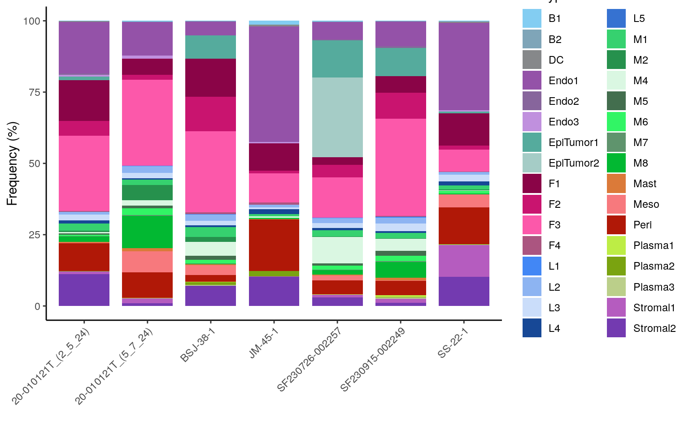
| Version | Author | Date |
|---|---|---|
| 3bbda19 | heinin | 2025-05-13 |
Cell type proportions by response
create_barplot(baseline_tumor,
group_var = "BestResponse",
plot_var = "Annotation",
plot_levels = sort((unique(baseline_tumor$Annotation))),
group_levels = sort(unique(baseline_tumor$BestResponse)),
plot_colors = pipac_celltype_col,
var_names = c("Frequency (%)", ""),
legend_title = "Celltype")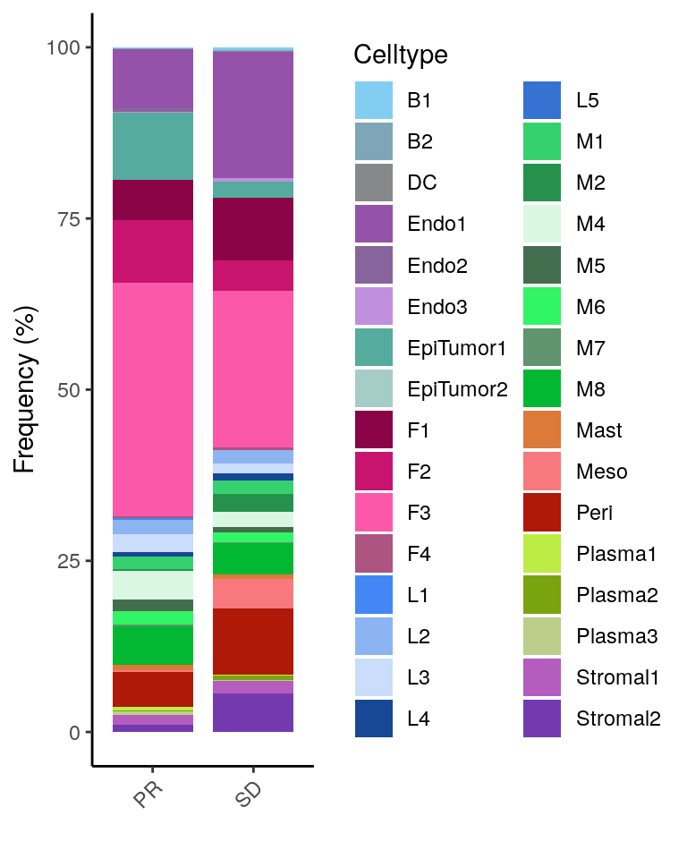
| Version | Author | Date |
|---|---|---|
| 3bbda19 | heinin | 2025-05-13 |
Testing for significance with scProportionTest
prop_test <- sc_utils(baseline_tumor)
prop_test <- permutation_test(
prop_test, cluster_identity = "Annotation",
sample_1 = "PR", sample_2 = "SD",
sample_identity = "BestResponse")
permutation_plot(prop_test) +
ggtitle("Baseline tumors")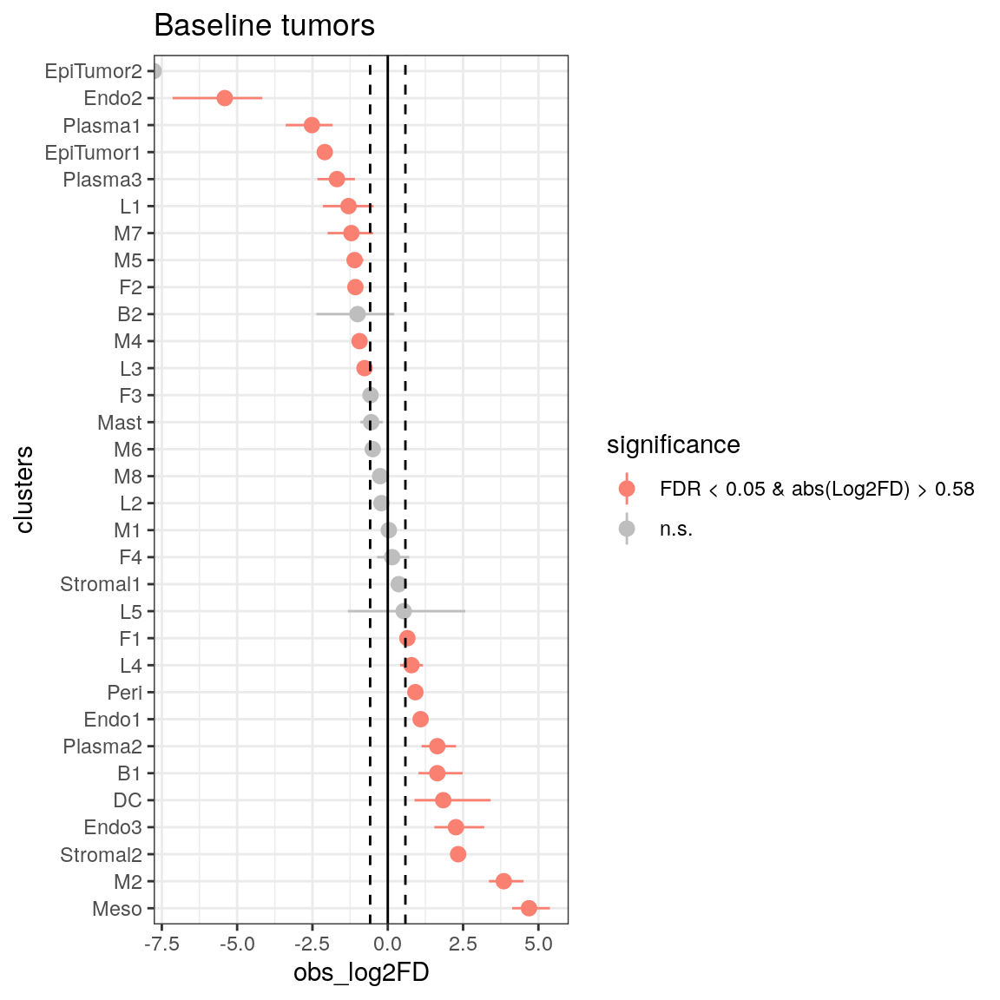
| Version | Author | Date |
|---|---|---|
| 3bbda19 | heinin | 2025-05-13 |
Cell type proportions by response in tumor-adjacent
baseline_normal <- subset(seurat_arm3, subset = Tissue == "Normal" &
Timepoint == 0)
baseline_normal <- baseline_normal %>%
NormalizeData() %>%
ScaleData()
table(baseline_normal$Patient_ID)
COH-022 COH-038 COH-045 MFL-040 MFL-043 MFL-046 MFL-049
2878 2395 2877 4156 3655 3859 2463 table(as.character(baseline_normal$Sample))
20-010121N_(2_5_24) 20-010121N_(5_7_24) BSJ-38-2 JM-45-2
3859 2463 2395 2877
SF230726-002256 SF230915-002250 SS-22-2
4156 3655 2878 baseline_normal@meta.data %>%
dplyr::select(c("Patient_ID", "Sample")) %>%
distinct() Patient_ID Sample
SF230915-002250_TMA8_aapkmjjf-1_9 MFL-043 SF230915-002250
BSJ-38-2_TMA8_abgdjnnp-1_9 COH-038 BSJ-38-2
20-010121N_(5_7_24)_TMA8_aeecfihf-1_9 MFL-049 20-010121N_(5_7_24)
JM-45-2_TMA9_aamalbcp-1_10 COH-045 JM-45-2
SS-22-2_TMA9_abfhegoa-1_10 COH-022 SS-22-2
20-010121N_(2_5_24)_TMA9_acinkijl-1_10 MFL-046 20-010121N_(2_5_24)
SF230726-002256_TMA9_afbnfahn-1_10 MFL-040 SF230726-002256table(baseline_normal$BestResponse)
PR SD
3655 10613 table(baseline_normal$Annotation)
B1 B2 DC Endo1 Endo2 Endo3 EpiTumor1 F1
108 12 66 4930 246 945 27 2463
F2 F3 F4 L1 L2 L3 L4 L5
169 3633 51 5 346 227 255 2
M1 M2 M4 M5 M6 M7 M8 Mast
490 75 83 61 250 29 520 106
Meso Peri Plasma1 Plasma2 Plasma3 Stromal1 Stromal2
1279 2908 4 68 8 354 2563 create_barplot(baseline_normal,
group_var = "BestResponse",
plot_var = "Annotation",
plot_levels = sort((unique(baseline_normal$Annotation))),
group_levels = sort(unique(baseline_normal$BestResponse)),
plot_colors = pipac_celltype_col,
var_names = c("Frequency (%)", ""),
legend_title = "Celltype")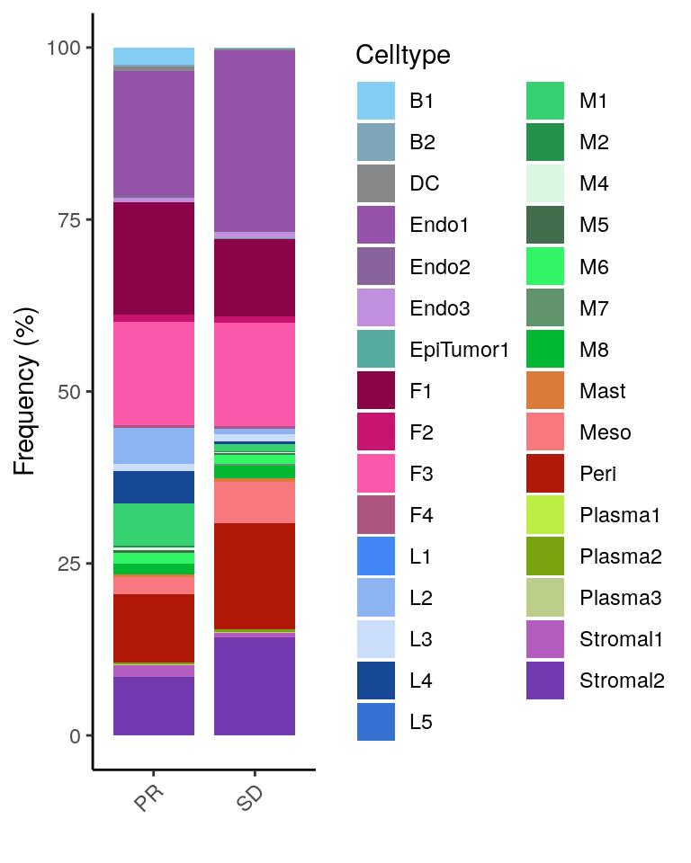
| Version | Author | Date |
|---|---|---|
| 3bbda19 | heinin | 2025-05-13 |
Testing for significance with scProportionTest
prop_test <- sc_utils(baseline_normal)
prop_test <- permutation_test(
prop_test, cluster_identity = "Annotation",
sample_1 = "PR", sample_2 = "SD",
sample_identity = "BestResponse")
permutation_plot(prop_test) +
ggtitle("Baseline tumor-adjacent")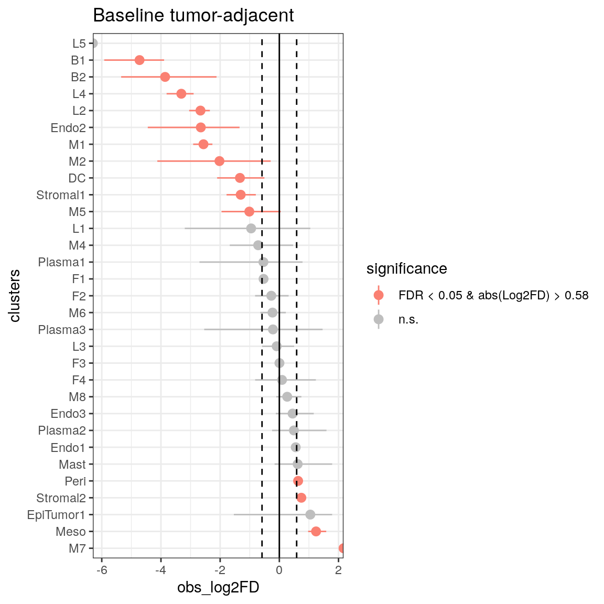
| Version | Author | Date |
|---|---|---|
| 3bbda19 | heinin | 2025-05-13 |
Tumor cell type proportion correlations with survival time
Linear regression
metadata <- baseline_tumor@meta.data %>%
dplyr::select("Patient_ID", "DISEASESITE", "osmonths", "pfsmonths", "No_of_PIPACs") %>%
distinct()
prop_table <- as.data.frame(table(baseline_tumor@meta.data$Annotation, as.character(baseline_tumor@meta.data$Patient_ID)))
colnames(prop_table) <- c("Annotation", "Patient_ID", "Freq")
prop_table <- spread(prop_table, Annotation, Freq)
# Converting to percentage
prop_table[,2:length(prop_table)] <- (prop_table[,2:length(prop_table)]/rowSums(prop_table[,2:length(prop_table)]))*100
prop_table <- gather(prop_table, Annotation, Freq, names(prop_table)[2:length(names(prop_table))], factor_key=TRUE)
# Adding survival data
prop_survival <- merge(prop_table, metadata, by = "Patient_ID")
prop_survival$osmonths <- unlist(prop_survival$osmonths)
prop_survival$pfmonths <- unlist(prop_survival$pfmonths)
# Plotting
plot_list <- lapply(sort(unique(baseline_tumor$Annotation)), function(ct){
prop_survival %>%
filter(Annotation == ct) %>%
ggplot(aes(x = Freq, y = osmonths, color = Annotation)) +
geom_point() +
scale_color_manual(name = "Annotation", values = pipac_celltype_col) +
stat_poly_line() +
stat_poly_eq(formula = y ~ x,
rr.digits = 3, p.digits = 3, small.p = T,
aes(label = paste(after_stat(rr.label), after_stat(p.value.label), sep = "*`,`~")),
label.x = 0.01, label.y = 1, parse = T) +
ylab("Overall Survival") +
xlab(paste0("% of ", ct, " cells")) +
theme_classic() +
theme(axis.text.x = element_text(color = "black"),
axis.text.y = element_text(color = "black")) +
NoLegend()
})
wrap_plots(plot_list, ncol = 3)After treatment tumor
Cell type proportions by sample
unique(seurat_arm3$Timepoint)[1] "6" "0"post_treatment_tumor <- subset(seurat_arm3, subset = Tissue == "Tumor" &
Timepoint %in% c(6, 12))
post_treatment_tumor <- post_treatment_tumor %>%
NormalizeData() %>%
ScaleData()
table(post_treatment_tumor$Patient_ID)
COH-022 COH-038 COH-045 MFL-040 MFL-043 MFL-046 MFL-049
801 5496 2647 5122 3212 16157 5500 table(as.character(post_treatment_tumor$Sample))
20-010121T_(3_26_24) 20-010121T_(6_19_24) BSJ-38-3
16157 5500 5496
JM-45-3 SF230912-002063 SF231027-005404
2647 5122 3212
SS-22-3
801 post_treatment_tumor@meta.data %>%
dplyr::select(c("Patient_ID", "Sample")) %>%
distinct() Patient_ID Sample
BSJ-38-3_TMA8_aaaalbkj-1_9 COH-038 BSJ-38-3
20-010121T_(6_19_24)_TMA8_aacodpjo-1_9 MFL-049 20-010121T_(6_19_24)
SF231027-005404_TMA8_admleojl-1_9 MFL-043 SF231027-005404
SS-22-3_TMA9_aagjmgfm-1_10 COH-022 SS-22-3
JM-45-3_TMA9_abehepnb-1_10 COH-045 JM-45-3
SF230912-002063_TMA9_aecjangm-1_10 MFL-040 SF230912-002063
20-010121T_(3_26_24)_TMA9_aelaglgk-1_10 MFL-046 20-010121T_(3_26_24)table(post_treatment_tumor$BestResponse)
PR SD
3212 14444 create_barplot(post_treatment_tumor,
group_var = "Sample",
plot_var = "Annotation",
plot_levels = sort((unique(post_treatment_tumor$Annotation))),
group_levels = sort(unique(post_treatment_tumor$Sample)),
plot_colors = pipac_celltype_col,
var_names = c("Frequency (%)", ""),
legend_title = "Celltype")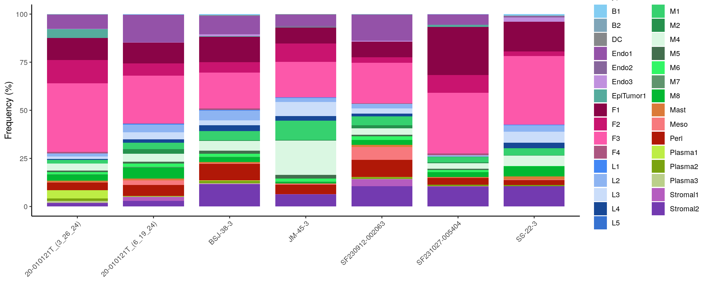
| Version | Author | Date |
|---|---|---|
| 3bbda19 | heinin | 2025-05-13 |
Cell type proportions by response
create_barplot(post_treatment_tumor,
group_var = "BestResponse",
plot_var = "Annotation",
plot_levels = sort((unique(post_treatment_tumor$Annotation))),
group_levels = sort(unique(post_treatment_tumor$BestResponse)),
plot_colors = pipac_celltype_col,
var_names = c("Frequency (%)", ""),
legend_title = "Celltype")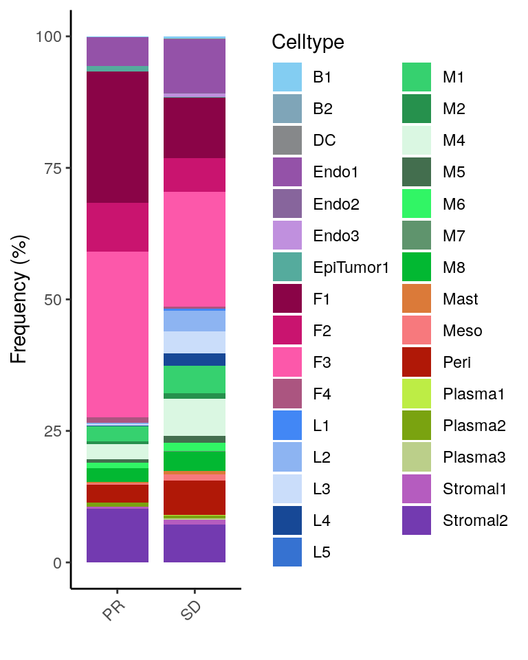
| Version | Author | Date |
|---|---|---|
| 3bbda19 | heinin | 2025-05-13 |
Testing for significance with scProportionTest
prop_test <- sc_utils(post_treatment_tumor)
prop_test <- permutation_test(
prop_test, cluster_identity = "Annotation",
sample_1 = "PR", sample_2 = "SD",
sample_identity = "BestResponse")
permutation_plot(prop_test) +
ggtitle("Post-treatment tumors")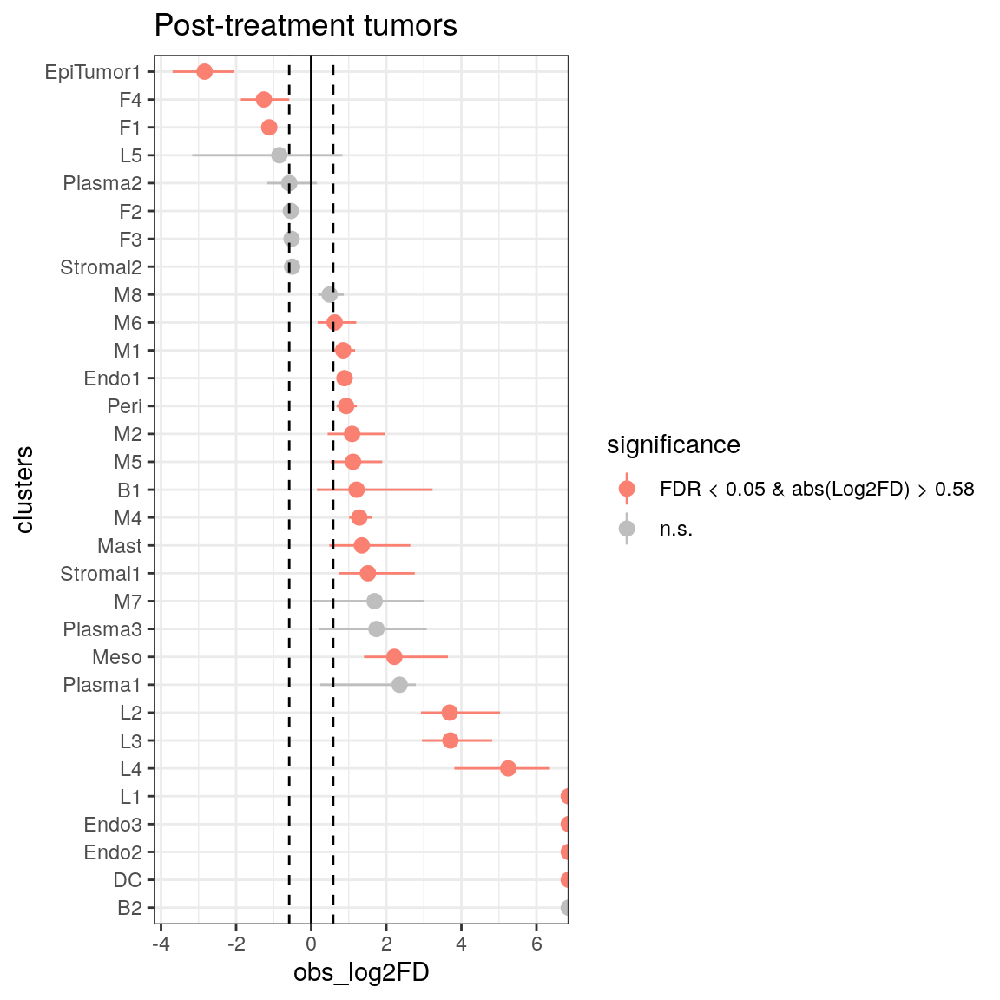
| Version | Author | Date |
|---|---|---|
| 3bbda19 | heinin | 2025-05-13 |
Cell type proportions by response in tumor-adjacent
unique(seurat_arm3$Timepoint)[1] "6" "0"treated_normal <- subset(seurat_arm3, subset = Tissue == "Normal" &
Timepoint == c(6, 12))
treated_normal <- treated_normal %>%
NormalizeData() %>%
ScaleData()
table(treated_normal$Patient_ID)
COH-022 COH-038 COH-045 MFL-040 MFL-043 MFL-046 MFL-049
1859 1558 2047 3570 2328 1320 2395 table(as.character(treated_normal$Sample))
20-010121N_(3_26_24) 20-010121N_(6_19_24) BSJ-38-4
1320 2395 1558
JM-45-4 SF230912-002062 SF231027-005405
2047 3570 2328
SS-22-4
1859 treated_normal@meta.data %>%
dplyr::select(c("Patient_ID", "Sample")) %>%
distinct() Patient_ID Sample
20-010121N_(3_26_24)_TMA8_aaacehok-1_9 MFL-046 20-010121N_(3_26_24)
SF230912-002062_TMA8_aahccjbj-1_9 MFL-040 SF230912-002062
JM-45-4_TMA8_aedpaehf-1_9 COH-045 JM-45-4
SS-22-4_TMA8_aeeklhem-1_9 COH-022 SS-22-4
BSJ-38-4_TMA9_aaagjppb-1_10 COH-038 BSJ-38-4
20-010121N_(6_19_24)_TMA9_abocijcg-1_10 MFL-049 20-010121N_(6_19_24)
SF231027-005405_TMA9_abokfaoo-1_10 MFL-043 SF231027-005405table(treated_normal$BestResponse)
PR SD
2328 7859 table(treated_normal$Annotation)
B1 B2 DC Endo1 Endo2 Endo3 EpiTumor1 F1
161 19 41 1573 240 1105 13 1107
F2 F3 F4 L1 L2 L3 L4 L5
259 3054 20 24 337 385 123 13
M1 M2 M4 M5 M6 M7 M8 Mast
599 331 264 95 288 17 1523 123
Meso Peri Plasma1 Plasma2 Plasma3 Stromal1 Stromal2
559 1268 21 61 10 211 1233 create_barplot(treated_normal,
group_var = "BestResponse",
plot_var = "Annotation",
plot_levels = sort((unique(treated_normal$Annotation))),
group_levels = sort(unique(treated_normal$BestResponse)),
plot_colors = pipac_celltype_col,
var_names = c("Frequency (%)", ""),
legend_title = "Celltype")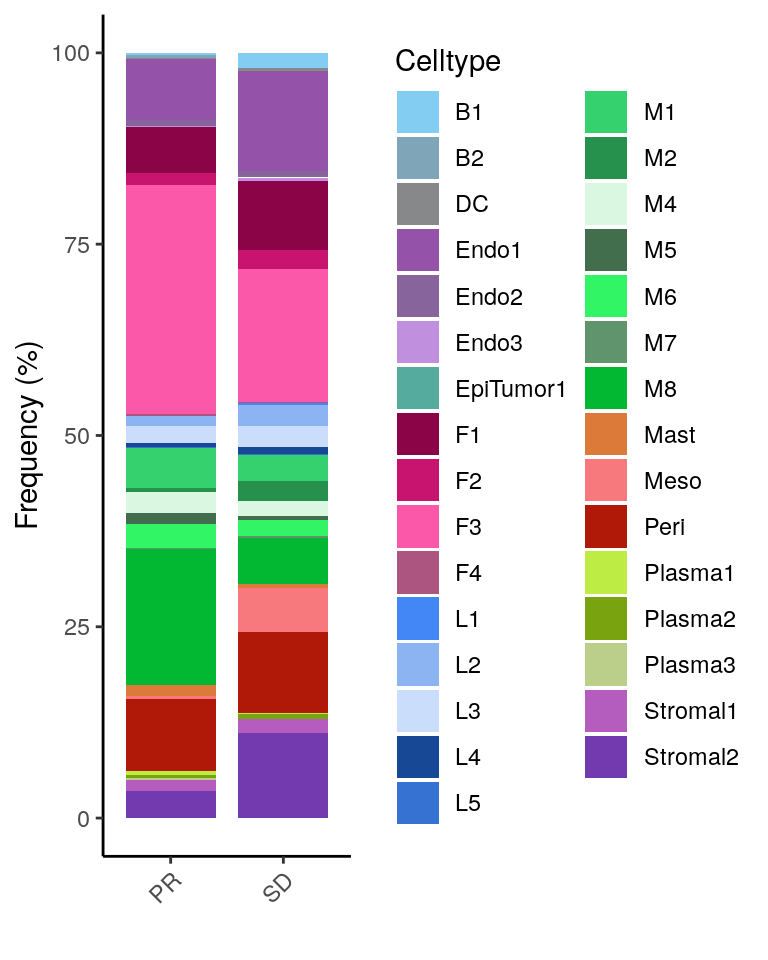
| Version | Author | Date |
|---|---|---|
| 3bbda19 | heinin | 2025-05-13 |
Testing for significance with scProportionTest
prop_test <- sc_utils(treated_normal)
prop_test <- permutation_test(
prop_test, cluster_identity = "Annotation",
sample_1 = "PR", sample_2 = "SD",
sample_identity = "BestResponse")
permutation_plot(prop_test) +
ggtitle("Post-treatment tumor-adjacent")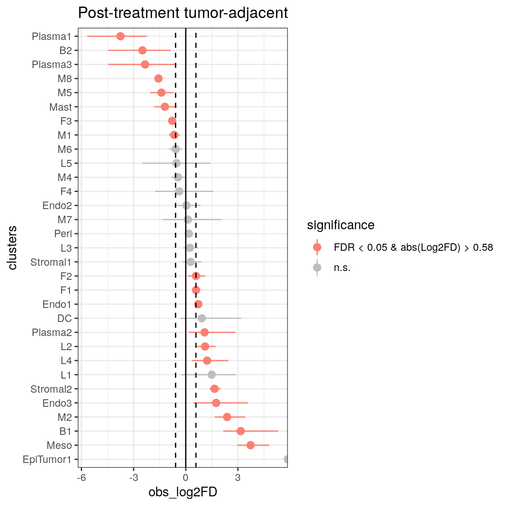
| Version | Author | Date |
|---|---|---|
| 3bbda19 | heinin | 2025-05-13 |
Tumor cell type proportion correlations with survival time
Linear regression
metadata <- post_treatment_tumor@meta.data %>%
dplyr::select("Patient_ID", "DISEASESITE", "osmonths", "pfsmonths", "No_of_PIPACs") %>%
distinct()
prop_table <- as.data.frame(table(post_treatment_tumor@meta.data$Annotation, as.character(post_treatment_tumor@meta.data$Patient_ID)))
colnames(prop_table) <- c("Annotation", "Patient_ID", "Freq")
prop_table <- spread(prop_table, Annotation, Freq)
# Converting to percentage
prop_table[,2:length(prop_table)] <- (prop_table[,2:length(prop_table)]/rowSums(prop_table[,2:length(prop_table)]))*100
prop_table <- gather(prop_table, Annotation, Freq, names(prop_table)[2:length(names(prop_table))], factor_key=TRUE)
# Adding survival data
prop_survival <- merge(prop_table, metadata, by = "Patient_ID")
prop_survival$osmonths <- unlist(prop_survival$osmonths)
prop_survival$pfmonths <- unlist(prop_survival$pfmonths)
# Plotting
plot_list <- lapply(sort(unique(post_treatment_tumor$Annotation)), function(ct){
prop_survival %>%
filter(Annotation == ct) %>%
ggplot(aes(x = Freq, y = osmonths, color = Annotation)) +
geom_point() +
scale_color_manual(name = "Annotation", values = pipac_celltype_col) +
stat_poly_line() +
stat_poly_eq(formula = y ~ x,
rr.digits = 3, p.digits = 3, small.p = T,
aes(label = paste(after_stat(rr.label), after_stat(p.value.label), sep = "*`,`~")),
label.x = 0.01, label.y = 1, parse = T) +
ylab("Overall Survival") +
xlab(paste0("% of ", ct, " cells")) +
theme_classic() +
theme(axis.text.x = element_text(color = "black"),
axis.text.y = element_text(color = "black")) +
NoLegend()
})
wrap_plots(plot_list, ncol = 3)
names(plot_list) <- sort(unique(post_treatment_tumor$Annotation))plot_list[["F5"]]Calculating Hazard ratios
prop_table <- as.data.frame(table(immune_fibro@meta.data$celltype, as.character(immune_fibro@meta.data$UPN)))
colnames(prop_table) <- c("celltype", "UPN", "Freq")
prop_table <- spread(prop_table, celltype, Freq)
# Converting to percentage
prop_table[,2:length(prop_table)] <- (prop_table[,2:length(prop_table)]/rowSums(prop_table[,2:length(prop_table)]))*100
prop_table <- gather(prop_table, celltype, Freq, names(prop_table)[2:length(names(prop_table))], factor_key=TRUE)
prop_table <- prop_table %>% pivot_wider(names_from = celltype,
values_from = Freq)
# Adding survival data
metadata <- immune_fibro@meta.data %>%
dplyr::select("UPN",
"Death.Status",
"Survival.time.in.Months.from.surgery",
"binary_response",
"Grade",
"Diagnosis.Histology",
"EGFR.Amplification",
"EGFRvIII..Exon.2.7.deletion",
"EGFR.Missense",
"TP53.Frameshift",
"TP53.Missense",
"TP53.Nonsense",
"IDH1.Missense",
"IDH2.Missense",
"TERT.Promoter.Mutation",
"PTEN.Codon.Deletion",
"PTEN.Frameshift",
"PTEN.Interference.of.splice.acceptor.site.in.Intron.6") %>%
distinct()
prop_survival <- merge(prop_table, metadata, by = "UPN")
# Fit survival data using the Kaplan-Meier method
surv_object <- Surv(time = prop_survival$Survival.time.in.Months.from.surgery,
event = prop_survival$Death.Status)
surv_object
# Fit a Cox proportional hazards model for a single gene
fit.coxph <- coxph(surv_object ~ M1 + M2 + M3 + M4 + M5 + M6 + M7 + M8 + M9 + N1 +
L1 + L2 + L3 + L4 + L5 + L6 + L7 + L8 + L8 + L9 + L10 + B1 +
F1 + F2 + F3,
data = prop_survival)
p1 <- ggforest(fit.coxph, data = prop_survival)
p1Inspecting F5
Fibroblast marker expression
DotPlot(subset(post_treatment_tumor, subset = Annotation %in% paste0("F", seq(1,5))),
group.by = "Annotation",
features = c(unique(markers_by_group[which(markers_by_group$annotation1 == "CAFs"),]$feature), "DCN", "LUM", "EPCAM"),
cols = c("gray88", "tomato3")) +
coord_flip() +
ggtitle("CAFs, post-treatment (D6/12)")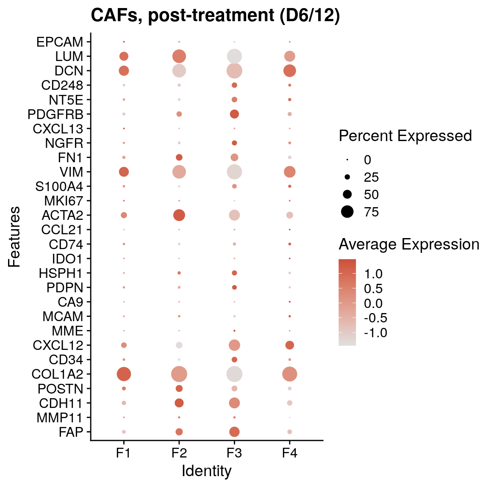
| Version | Author | Date |
|---|---|---|
| 3bbda19 | heinin | 2025-05-13 |
#Idents(seurat_data) <- seurat_data$Annotation
#celltype_markers <- FindAllMarkers(seurat_data,
# return.thresh = 0.01,
# logfc.threshold = 0.5,
# min.pct = 0.20,
# only.pos = T,
# verbose = F)
#
#table(celltype_markers$cluster)
#
#output_celltype_markers <- celltype_markers %>%
# arrange(dplyr::desc(abs(avg_log2FC))) %>%
# group_by(cluster) %>%
# dplyr::slice(1:30)
#
#output_celltype_markers <- merge(output_celltype_markers, markers, by.x = "gene", by.y = "Gene")Tumor cell type proportion differences between timepoints (before and after treatment)
arm3_tumor$PrePost <- ifelse(arm3_tumor$Timepoint == 0, "Baseline", "Treated")
create_barplot(arm3_tumor,
group_var = "PrePost",
plot_var = "Annotation",
plot_levels = sort((unique(arm3_tumor$Annotation))),
group_levels = sort(unique(arm3_tumor$PrePost)),
plot_colors = pipac_celltype_col,
var_names = c("Frequency (%)", ""),
legend_title = "Celltype")
| Version | Author | Date |
|---|---|---|
| 3bbda19 | heinin | 2025-05-13 |
prop_test <- sc_utils(arm3_tumor)
prop_test <- permutation_test(
prop_test, cluster_identity = "Annotation",
sample_1 = "Baseline", sample_2 = "Treated",
sample_identity = "PrePost")
permutation_plot(prop_test) +
ggtitle("Baseline vs. treated")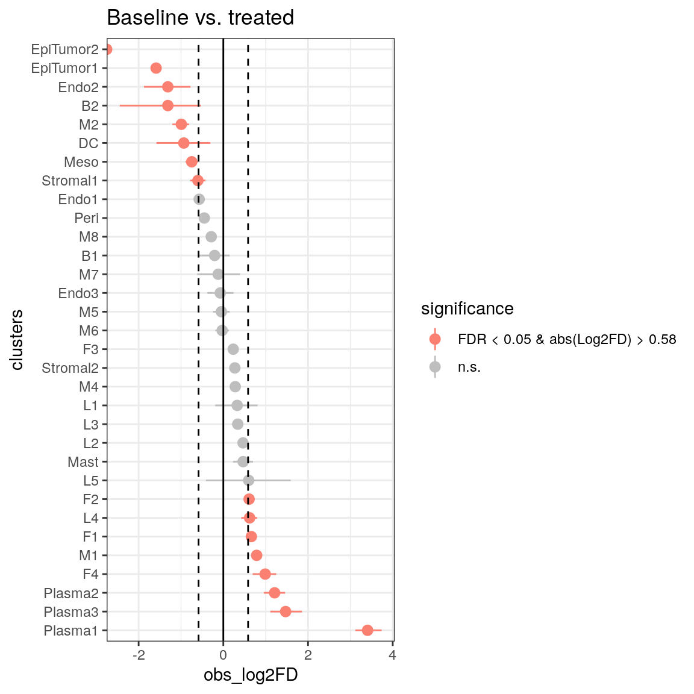
| Version | Author | Date |
|---|---|---|
| 3bbda19 | heinin | 2025-05-13 |
Tumor-adjacent cell type proportion differences between timepoints (before and after treatment)
arm3_normal$PrePost <- ifelse(arm3_normal$Timepoint == 0, "Baseline", "Treated")
create_barplot(arm3_normal,
group_var = "PrePost",
plot_var = "Annotation",
plot_levels = sort((unique(arm3_normal$Annotation))),
group_levels = sort(unique(arm3_normal$PrePost)),
plot_colors = pipac_celltype_col,
var_names = c("Frequency (%)", ""),
legend_title = "Celltype")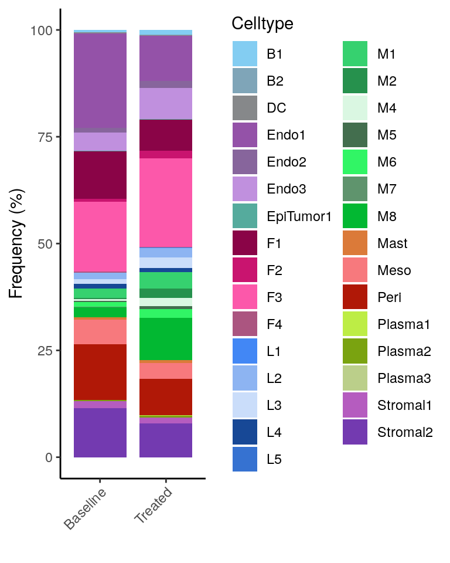
| Version | Author | Date |
|---|---|---|
| 3bbda19 | heinin | 2025-05-13 |
prop_test <- sc_utils(arm3_normal)
prop_test <- permutation_test(
prop_test, cluster_identity = "Annotation",
sample_1 = "Baseline", sample_2 = "Treated",
sample_identity = "PrePost")
permutation_plot(prop_test) +
ggtitle("Baseline vs. treated")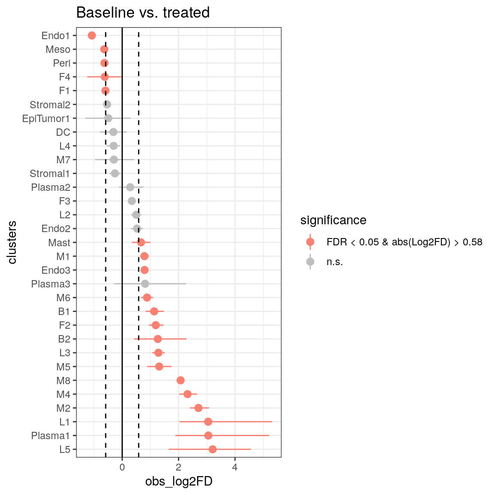
| Version | Author | Date |
|---|---|---|
| 3bbda19 | heinin | 2025-05-13 |
sessionInfo()R version 4.3.0 (2023-04-21)
Platform: x86_64-pc-linux-gnu (64-bit)
Running under: Ubuntu 22.04.3 LTS
Matrix products: default
BLAS: /usr/lib/x86_64-linux-gnu/openblas-pthread/libblas.so.3
LAPACK: /usr/lib/x86_64-linux-gnu/openblas-pthread/libopenblasp-r0.3.20.so; LAPACK version 3.10.0
locale:
[1] LC_CTYPE=en_US.UTF-8 LC_NUMERIC=C
[3] LC_TIME=en_US.UTF-8 LC_COLLATE=en_US.UTF-8
[5] LC_MONETARY=en_US.UTF-8 LC_MESSAGES=en_US.UTF-8
[7] LC_PAPER=en_US.UTF-8 LC_NAME=C
[9] LC_ADDRESS=C LC_TELEPHONE=C
[11] LC_MEASUREMENT=en_US.UTF-8 LC_IDENTIFICATION=C
time zone: Etc/UTC
tzcode source: system (glibc)
attached base packages:
[1] grid stats graphics grDevices utils datasets methods
[8] base
other attached packages:
[1] ComplexHeatmap_2.18.0 viridis_0.6.3
[3] viridisLite_0.4.2 circlize_0.4.15
[5] plyr_1.8.8 RColorBrewer_1.1-3
[7] scProportionTest_0.0.0.9000 ggpmisc_0.5.2
[9] ggpp_0.5.2 patchwork_1.1.2
[11] googlesheets4_1.1.0 ggrepel_0.9.3
[13] ggpubr_0.6.0 lubridate_1.9.2
[15] forcats_1.0.0 stringr_1.5.0
[17] dplyr_1.1.2 purrr_1.0.2
[19] readr_2.1.4 tidyr_1.3.0
[21] tibble_3.2.1 ggplot2_3.4.2
[23] tidyverse_2.0.0 SeuratDisk_0.0.0.9021
[25] Seurat_5.0.1 SeuratObject_5.0.2
[27] sp_1.6-1 arrow_12.0.0
[29] workflowr_1.7.1
loaded via a namespace (and not attached):
[1] RcppAnnoy_0.0.20 splines_4.3.0 later_1.3.1
[4] cellranger_1.1.0 polyclip_1.10-4 fastDummies_1.7.3
[7] lifecycle_1.0.3 rstatix_0.7.2 doParallel_1.0.17
[10] rprojroot_2.0.3 globals_0.16.2 processx_3.8.1
[13] lattice_0.21-8 hdf5r_1.3.8 MASS_7.3-60
[16] backports_1.4.1 magrittr_2.0.3 plotly_4.10.2
[19] sass_0.4.6 rmarkdown_2.22 jquerylib_0.1.4
[22] yaml_2.3.7 httpuv_1.6.11 sctransform_0.4.1
[25] spam_2.9-1 spatstat.sparse_3.0-1 reticulate_1.29
[28] cowplot_1.1.1 pbapply_1.7-0 abind_1.4-5
[31] Rtsne_0.16 BiocGenerics_0.48.1 git2r_0.32.0
[34] S4Vectors_0.40.2 IRanges_2.36.0 irlba_2.3.5.1
[37] listenv_0.9.0 spatstat.utils_3.0-3 MatrixModels_0.5-1
[40] goftest_1.2-3 RSpectra_0.16-1 spatstat.random_3.1-5
[43] fitdistrplus_1.1-11 parallelly_1.36.0 leiden_0.4.3
[46] codetools_0.2-19 shape_1.4.6 tidyselect_1.2.0
[49] farver_2.1.1 stats4_4.3.0 matrixStats_1.0.0
[52] spatstat.explore_3.2-1 googledrive_2.1.0 jsonlite_1.8.5
[55] GetoptLong_1.0.5 ellipsis_0.3.2 progressr_0.13.0
[58] iterators_1.0.14 ggridges_0.5.4 survival_3.5-5
[61] foreach_1.5.2 tools_4.3.0 ica_1.0-3
[64] Rcpp_1.0.10 glue_1.6.2 gridExtra_2.3
[67] xfun_0.39 withr_2.5.0 fastmap_1.1.1
[70] fansi_1.0.4 SparseM_1.81 callr_3.7.3
[73] digest_0.6.31 timechange_0.2.0 R6_2.5.1
[76] mime_0.12 colorspace_2.1-0 scattermore_1.2
[79] tensor_1.5 spatstat.data_3.0-1 utf8_1.2.3
[82] generics_0.1.3 data.table_1.14.8 httr_1.4.6
[85] htmlwidgets_1.6.2 whisker_0.4.1 uwot_0.1.14
[88] pkgconfig_2.0.3 gtable_0.3.3 lmtest_0.9-40
[91] htmltools_0.5.5 carData_3.0-5 dotCall64_1.0-2
[94] clue_0.3-64 scales_1.2.1 png_0.1-8
[97] knitr_1.43 rstudioapi_0.14 rjson_0.2.21
[100] tzdb_0.4.0 reshape2_1.4.4 curl_5.0.1
[103] nlme_3.1-162 GlobalOptions_0.1.2 cachem_1.0.8
[106] zoo_1.8-12 KernSmooth_2.23-21 parallel_4.3.0
[109] miniUI_0.1.1.1 pillar_1.9.0 vctrs_0.6.5
[112] RANN_2.6.1 promises_1.2.0.1 car_3.1-2
[115] xtable_1.8-4 cluster_2.1.4 evaluate_0.21
[118] cli_3.6.1 compiler_4.3.0 rlang_1.1.1
[121] crayon_1.5.2 future.apply_1.11.0 ggsignif_0.6.4
[124] labeling_0.4.2 ps_1.7.5 getPass_0.2-4
[127] fs_1.6.2 stringi_1.7.12 deldir_1.0-9
[130] assertthat_0.2.1 munsell_0.5.0 lazyeval_0.2.2
[133] spatstat.geom_3.2-1 quantreg_5.95 Matrix_1.6-5
[136] RcppHNSW_0.5.0 hms_1.1.3 bit64_4.0.5
[139] future_1.32.0 shiny_1.7.4 highr_0.10
[142] ROCR_1.0-11 gargle_1.4.0 igraph_1.4.3
[145] broom_1.0.4 bslib_0.4.2 bit_4.0.5
[148] polynom_1.4-1